Graphics and sound: G1–G10
Debug build with --demo (sample cards, no audio), captured with PrintWindow. "Before" is the working tree before this change; "after" is the working tree on 2026-10-20.
Each effect shot uses --demo --fx <moment>, which plays one effect and holds one frame of it. Effects last well under a second, so these are single frames. The faint colour behind the lower panel is the system acrylic showing the desktop, not an effect.
The HUD at rest
Before
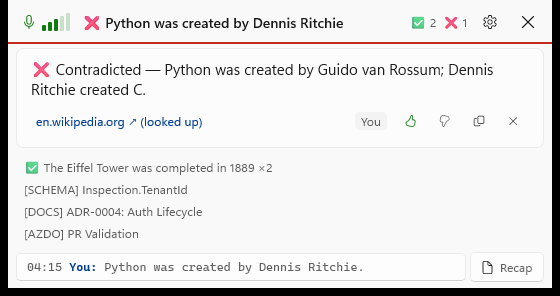
After (Effects: Full)
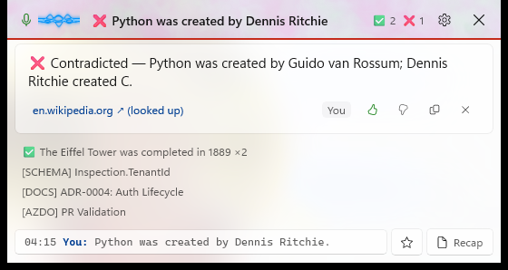
1 2 3- Voice ribbon (G2). Three glowing strands replace the five bars and swell with the voice: accent blue for you, amber for the call. It lies flat in silence.
- Living glass (G1). A slow aurora under the frosted pill, tinted by the last verdict (red here). At Full it drifts faster while you talk. It stops redrawing 2 s after you go quiet.
- Constellation button (G10). ✦ opens this session's cards as stars (see below).
Effects: Off — the HUD as it was
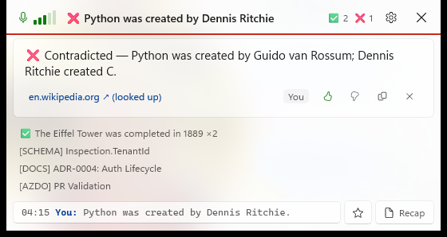
Choosing Off, turning off Windows' Animation effects, or using high contrast brings back the bars and the progress bar, and nothing moves. Battery saver caps Full at Subtle.
Settings
Before
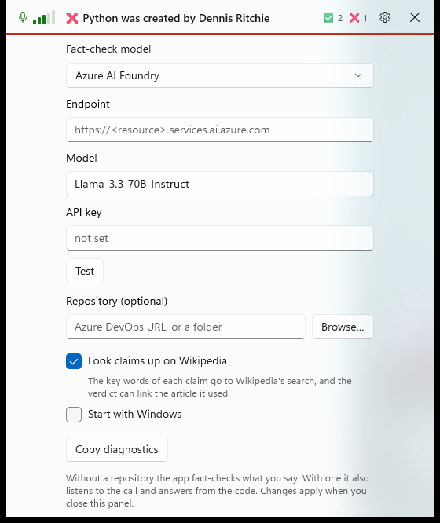
After
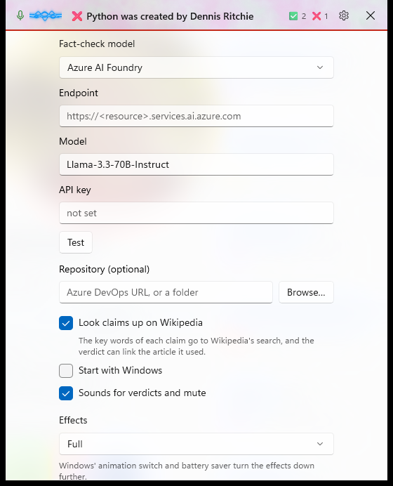
1 2- Sounds for verdicts and mute (G7). These are short synthesized cues. Each is cut at 240 ms: the segmenter ignores anything under 300 ms, so call-audio capture never turns a cue into a transcript.
- Effects: Full / Subtle / Off. Changing it, or the sounds switch, applies at once without reloading the models.
The moments
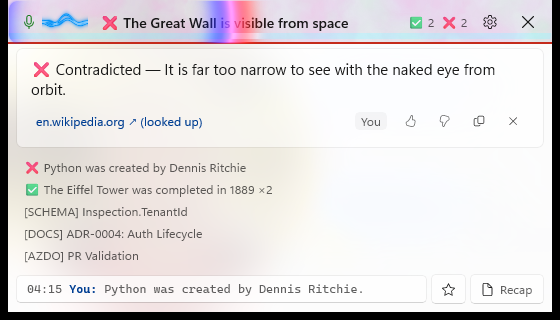
G3Contradicted, 0.13 s in: the shockwave splits into red, green and blue rings with a few torn scanlines, the headline jolts sideways, and a low buzz plays.
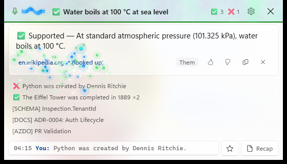
G3 G6Supported, 0.42 s in: after a green ring and a light sweep, evidence sparks fall out of the pill and are pulled onto the source link. A rising two-note pluck plays.
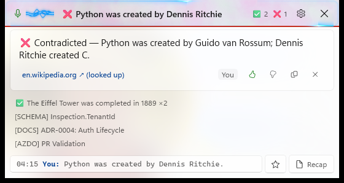
G4Checking: two comets with fading tails run round the pill's outline at an even speed, and turn amber if the check takes longer than 2 s. They replace the progress bar.
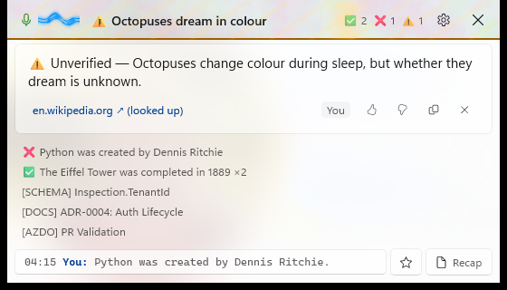
G3Unverified: an amber ring with a diagonal shimmer, and two glassy ticks.
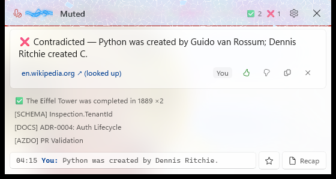
G9Mute: Voronoi frost grows in from the rim with bright crystal edges and the odd glint, thin enough in the middle to read Muted. A falling chirp plays.
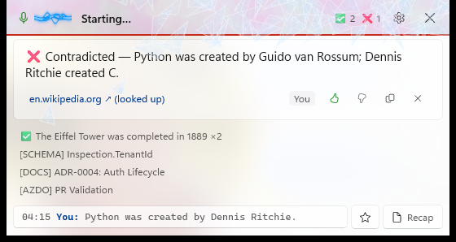
G9Unmute, 0.2 s in: the frost is broken into 64 shards thrown away from the click (or the microphone), spinning and falling under gravity. A rising chirp plays.
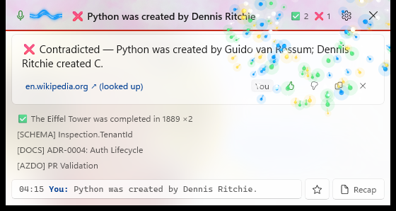
G6Milestone: every tenth 👍 in a week bursts from the tally with a C–E–G arpeggio. A single 👍 or 👎 gives a small burst where you clicked.
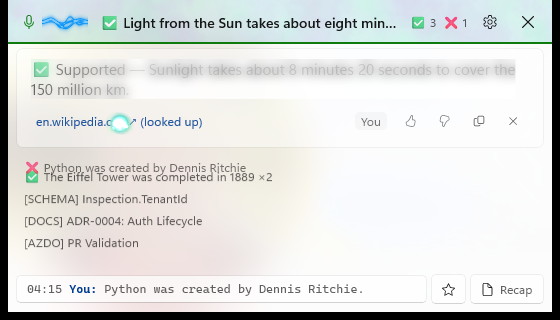
G5 G8Arrival, with composition time slowed to 8 %: the card springs up, its answer sharpens from left to right, and the history lines slide down on a spring. Here the line it pushed down is still on its way.
Session constellation (G10)
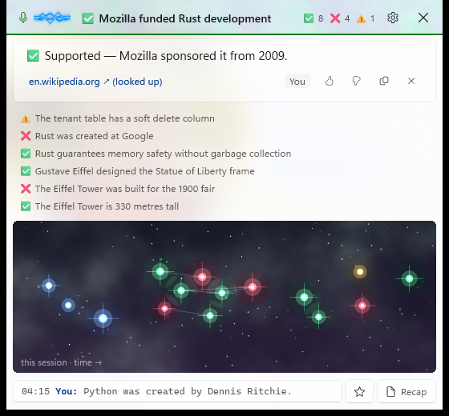
1 2 3- Time runs left to right. The first stars are the demo's repository cards (schema, docs, pipeline), so they have no verdict and show in blue.
- Related claims pull together. Springs join cards that share key words (the Python and Eiffel Tower claims here); every star repels the others. Colour is the verdict, size the confidence, and confident ones get diffraction spikes.
- Hover names a star; click brings its card back. The sky is a shader: a gradient, a nebula in the session's mix of verdict colours, and twinkling stars. It opens with ✦ and after every recap.
Cost
State (Debug build, --demo) | CPU, share of one core |
|---|---|
| Effects Off | 2.0 % |
| Full, nothing moving (asleep) | 2.3 % |
| Subtle, voice moving | 6.6 % |
| Full, voice moving | 8.3 % |
Details and how this came down from 26 %: docs/perf.md. Design: docs/adr/0005-native-gpu-effects.md.